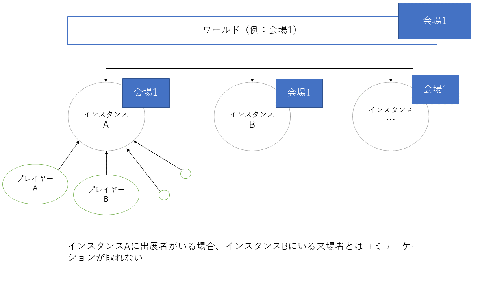

バーチャルマーケット3
動画
https://youtu.be/vakFJ99QzuE概要
- 開催日 2019年9月21日～9月28日 23時
- 開催場所 VRChat（ソーシャルVRプラットフォーム）
- 募集スペース数 600（応募サークル数 1014）
- 来場者数 のべ70万人
所感
出展物主体というより出展ブース含めた会場やイベントそれ自体が主体

VRChatでは、基本の「ワールド」のデータからプレイヤーが自由に「インスタンス」を建てて来場できる。
このVRCの性質上、出展者がいなくてもブースだけで展示される。
出展者と来場者の直接的なコミュニケーションの機会は限られる。
上記の性質により、一人で/知人内で会場を周ることができる。